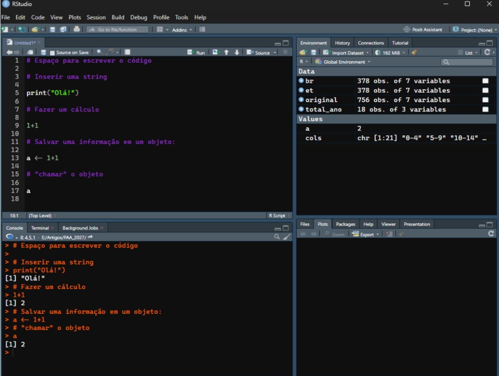

a <- 1+1
class(a)[1] "numeric"Wellington Osterno
July 27, 2026
R é um software livre para realizar tratamento e análise de dados e gráficos. Suas principais funções incluem a análise estatística, como modelagem linear e não linear, testes estatísticos clássicos, análise de séries temporais, classificação, clusterização, dentre outros. Suas funções gráficas também são largamente utilizadas, sobretudo para apresentar os resultados do tratamento e manipulação dos dados.
O RStudio é um programa que proporciona um ambiente para desenvolvimento de trabalhos com o R. A apresentação mais geral do RStudio passa pela divisão principal em quatro setores do ambientes:
O primeiro, à esquerda na parte superior, é onde escreve-se o código para importar, organizar, transformar os dados, dentre outras possibilidades. Por exemplo, na Figura 1 a linha 5 insere o comando “print(“Olá!”)”, o que indica ao programa que queremos que o resultado dessa coluna seja a palavra “Olá!”. O quadro à esquerda na parte inferior é onde os resultados aparecem. Com isso, a primeira linha em branco nesta seção apresenta o resultado da linha 5 do ambiente na parte superior à esquerda: “Olá!”.

A parte superior direita apresenta os objetos e valores já criados e salvos. Por exemplo, br é uma base de dados com 378 observações ou linhas e 7 variáveis, ou colunas. No exemplo da Figura 1 temos a criação de um objeto chamado “a” e seu valor é o resultado de 1+1. A linha 13 do quadro que escreve o código cria o objeto e a linha 17 retorna o valor desse objeto - muitas vezes fala-se que estamos “chamando” o objeto (call).
Por fim, o último quadro, na parte inferior à direita, apresenta os plots criados, mais comumente os gráficos. Neste caso não há nenhum plot criado e por isso a seção está vazia. É importante perceber que cada seção tem várias opções e sub-seções. No caso deste quadro de plots, pode-se abrir a subpasta “Packages” para verificar os pacotes que já estão em funcionamento na sua versão do R.
Os objetos no R são separados por tipos de variáveis, os quais permitem manipulações e operações específicas. Em geral, é importante que o tipo da variável esteja correto para que as transformações e manipulações dos dados sejam realizadas. A tabela a seguir indica quais são os tipos básicos de variáveis, seu formato e alguns exemplos.
| Tipo | Formato | Exemplos |
| Integer | Números inteiros | 1, 2, 3, 1000, -1000 |
| Numeric | Números decimais, com ponto como separador | 0.1, 0.599. 1.0000 |
| Character | Textos | “Olá!”, “1000”, “15/19” |
| Logical | Valores Booleanos. Valores que são falsos ou verdadeiros | TRUE, FALSE |
| Factor | Categóricos. Objetos que tenham alguma ordem definida. | “Jan”, “Fev”,“Mar” |
| Vector | Coleção de objetos em 1D | Uma lista com todos os nomes de meses ou com a ordem da Faixa Etária na ordem desejada |
| Matrix | Coleção de objetos do mesmo tipo em 2D | Matriz de origem-destino migratória |
| Data.frame | Coleção de objetos de tipos diferentes em 2D | Base de Dados do SIM ou do SINASC, com diferentes colunas para diferentes informações e cada linha é um indivíduo ou observação. |
| Missing | Valor lógico | NA |
| Empty | ~vazio~ | NULL |
Para identificar qual tipo de variável é o objeto de interesse, podemos utilizar o começando class(), como abaixo. Ao chamar class() identificamos que o tipo da variável a é numeric
Podemos utilizar as operações numéricas principalmente nos tipos numeric e integer, realizando contas entre números ou transformando objetos. Alguns exemplos são dados abaixo.
[1] 2[1] 0[1] 0.001[1] 1[1] 10[1] 4[1] 1.414214[1] 2[1] 3[1] 2Algumas funções de arrendondamento também são muito úteis. Vamos utilizar o número pi como exemplo. No R, o pi já é uma palavra reservada por si só. Mesmo não tendo criado um objeto pi o programa já o identifica:
Assim, podemos transformá-lo com os arrendondamentos:
[1] 3[1] 3.14[1] 3.14[1] 3[1] 4De modo simples, podemos utilizar as operações de comparação para dois objetos:
[1] FALSE[1] TRUE[1] TRUE[1] FALSE[1] TRUE[1] TRUE[1] "numeric"[1] "numeric"[1] "logical"Esse processo de comparação é importante para juntar informações de duas bases, como veremos em Relacionamentos. Uma aplicação mais simples é a definição da faixa etária do indivíduo a partir da sua idade. Pense em uma tabela com duas colunas:
idade_num: Idade (em anos completos)
Total: Número de pessoas com essa idade
O código abaixo é a criação de uma terceira coluna chamada faixa_etaria, que identifica a faixa etária daquela idade. Com isso, poderemos agrupo o Total por faixa etária posteriormente. Note que essa nova coluna é criada a partir da comparação entre a idade simples (coluna idade_num) e os valores indicados em cada linha.
faixa_etaria = case_when(
idade_num == 0 ~ "0 a 1 ano",
idade_num >= 1 & idade_num <= 4 ~ "1 a 4 anos",
idade_num >= 5 & idade_num <= 9 ~ "5 a 9 anos",
idade_num >= 10 & idade_num <= 14 ~ "10 a 14 anos",
idade_num >= 15 & idade_num <= 19 ~ "15 a 19 anos",
idade_num >= 20 & idade_num <= 24 ~ "20 a 24 anos",
idade_num >= 25 & idade_num <= 29 ~ "25 a 29 anos",
idade_num >= 30 & idade_num <= 34 ~ "30 a 34 anos",
idade_num >= 35 & idade_num <= 39 ~ "35 a 39 anos",
idade_num >= 40 & idade_num <= 44 ~ "40 a 44 anos",
idade_num >= 45 & idade_num <= 49 ~ "45 a 49 anos",
idade_num >= 50 & idade_num <= 54 ~ "50 a 54 anos",
idade_num >= 55 & idade_num <= 59 ~ "55 a 59 anos",
idade_num >= 60 & idade_num <= 64 ~ "60 a 64 anos",
idade_num >= 65 & idade_num <= 69 ~ "65 a 69 anos",
idade_num >= 70 & idade_num <= 74 ~ "70 a 74 anos",
idade_num >= 75 & idade_num <= 79 ~ "75 a 79 anos",
idade_num >= 80 ~ "80 anos e mais",
TRUE ~ as.character(`idade_num`)
)Os textos são largamente identificados no R como character. Em outras linguagem também chama-se de string, outro nome bastante comum para os objetos de texto. Para apresentar algumas transformações e manipulações de texto no R vamos utilizar o padrão de município que vem no Sistema de Informações de Mortalidade (SIM) do DataSUS.
[1] 15[1] "350950 CAMPINAS"[1] "350950 campinas"Podemos capitalizar a palavra Campinas, ou seja, deixar que somente a primeira letra esteja em letra maiúscula. Nesse caso precisamos instalar e carregar um pacote específico chamado stringr.
Warning: pacote 'stringr' foi compilado no R versão 4.5.3[1] "350950 Campinas"Também é possível extrair partes específicas da string a partir da posição dos caracteres:
[1] "350950"[1] "CAMPINAS"[1] "350950"[1] "CAMPINAS"[1] "350950"[1] "CAMPINAS"Uma prática comum é utilizar o padrão da string para criar substrings de interesse. Nesse caso, podemos utilizar o espaço para fazer as duas substrings, independemente do número de caracteres em cada uma.
[[1]]
[1] "350950" "CAMPINAS"Para acessar cada componente separadamente podemos inserir, ao final do código o termo “[[1]]”. Nese caso estamos acessa a primeira (e única) lista do objeto resultante.
Ao utilizar em seguida deste, os termos [1] ou [2] acessamos o elemento de tal lista. O primeiro é o número do código e o segundo é o nome da cidade.
[1] "350950"[1] "CAMPINAS"Substituição ou remoção de texto na string. A remoção pode ser feita como a substituição, porém o argumento replacement fica vazio, como duas aspas duplas sem nada: ““.
[1] "350950 SUMARÉ"[1] "350950 SUMARÉ"[1] "CAMPINAS"Perceba que ao inserir os argumentos na ordem correta e sem suprimir argumentos, não é necessário indicar o argumento:
[1] "CAMPINAS"[1] "CAMPINAS"Algumas outras transformações são:
[1] TRUE[1] TRUE[1] "Município: CAMPINAS"[1] "350950 - CAMPINAS"[1] "350950 - CAMPINAS"[1] "350950 - CAMPINAS"[1] "350950 CAMPINAS"[1] "350950 CAMPINAS"[1] TRUE[1] TRUE[1] TRUE[1] TRUEPodemos alterar o tipo da variável de interesse. Isso pode ser importante para diversas análises. Por exemplo, o código do município ou o ID que identifica um indivíduo anonimizado, pode ser classificado como número em uma base e em outra como string, como o código de Campinas utilizado anteriormente.
Quando for necessário realizar uniões (ou relacionamentos) entre duas bases que têm informações complementares, a variável deve conter o mesmo tipo.
Character para numeric
Character para factor
Esse caso é importante, por exemplo, para níveis de escolaridade, que são ordenáveis.
[1] "character"Com a transformação, podemos conferir os níveis da variável factor com levels().
[1] "factor"[1] "Ensino fundamental" "Ensino médio" "Ensino superior"
[4] "Ensino técnico" No caso da escolaridade utilizada, o nível técnico ficou por último, o que normalmente seria o terceiro, logo antes do Ensino superior. Para corrigir, podemos utilizar o argumento levels dentro da função factor() se transformação:
[1] "Ensino fundamental" "Ensino médio" "Ensino técnico"
[4] "Ensino Superior" O argumento levels acima indica qual é a ordem dos níveis e o argumento ordered indica que essa é a ordem a ser considerada, já que inserimos o argumento como True.
Outras conversões comuns:
| Conversão | Função | Exemplo |
| Texto → Número inteiro | as.integer() | as.integer(“350950”) |
| Texto → Número decimal | as.numeric() | as.numeric(“12.5”) |
| Número → Texto | as.character() | as.character(350950) |
| Texto → Fator | factor() | factor(escolaridade) |
| Factor → Texto | as.character() | as.character(escolaridade) |
| Número → Factor | factor() | factor(genero) |
É importante ressaltar que algumas conversões não fazem sentido e, em geral, declaram um aviso de erro. Esse é o caso quando tentamos converter uma palavra para número:
As bases de dados são estruturas amplamente utilizadas para análise de dados atualmente. As suas características permitem uma a organização e agregação de grandes quantidade e diversidade de informações.
Em geral, uma base de dados tem colunas e linhas. As colunais identificam o tipo de informação disposta ao longo desta. Por exemplo: Ano, Idade, Número de habitantes. As linhas apresentam as informações de cada coluna para cada observação. Esta observação pode ser uma pessoa, uma cidade, um país, um item de venda, etc.
No R, as bases de dados são identificadas pelo tipo Data.Frame e podem ser criados manualmente ou, mais comum, importados de uma máquina ou de um repositório. Podemos criar um data frame com a seguinte função básica do R:
# Criar manualmente uma base de dados, formato Data.Frame:
# dentro da função data.fame, cada argumento é uma coluna
# à esquerda é o nome da coluna, à direita os seus elementos
exemplo <- data.frame(
id = c(1,2,3,4),
nome = c("Campinas","São Paulo", "Rio de Janeiro", "Natal"),
un = c(50,80,40,40) # un: unidades escolares
)
# Podemos utilizar print() ou somente o nome do objeto para visualizá-lo
print(exemplo) id nome un
1 1 Campinas 50
2 2 São Paulo 80
3 3 Rio de Janeiro 40
4 4 Natal 40 id nome un
1 1 Campinas 50
2 2 São Paulo 80
3 3 Rio de Janeiro 40
4 4 Natal 40Outra forma é visualizar a partir de View(exemplo), que abre uma aba específica para a base de dados.
Para importar uma base de dados a partir do diretório, podemos utilizar pacotes específicos. Os pacotes readr e readxl são bastante comuns para importar arquivos excel ou csv.
Os arquivo csv são arquivos sepados por vírgulas (comma separated values), ou seja, são arquivos que organizam os dados separados por vírgulas e linhas ao invés de separar por células (em colunas e linhas). A importação pode ser feita como abaixo:
Warning: pacote 'readxl' foi compilado no R versão 4.5.3# A tibble: 6 × 2
`Idade simples` Total
<chr> <dbl>
1 0 anos 2777978
2 1 ano 2879163
3 2 anos 2906676
4 3 anos 2862071
5 4 anos 2923442
6 5 anos 2985940O caminho é o que identifica o arquivo que precisamos inserir. Neste caso estamos usando um formato específico por termos baixado todo o minicurso online. Para identificar o arquivo no seu computador, insira algo como:
“C:/Users/usuario/Desktop/grafico/base.xlsx”
Lembre-se que cada computador tem caminhos e nomes diferentes.
Se for preciso, use View() ou clique no nome do objeto no quadro à direita (o do ambiente do R) para visualizar a base completa. Podemos ver no resultado que a função head() apresentou duas colunas com os títulos: Idade Simples e Total.
Para cada Idade Simples conseguimos ver o Total da população para o Brasil. A coluna Idade Simples é uma string (ou character) e a Total é numeric, que também pode ser chamada de double (dbl).
A função read.csv() é básica do R e em geral funciona da mesma forma e deve ser utilizada se o arquivo estiver em um formato .csv.
[1] "Idade simples" "Total"
Anexando pacote: 'dplyr'Os seguintes objetos são mascarados por 'package:stats':
filter, lagOs seguintes objetos são mascarados por 'package:base':
intersect, setdiff, setequal, unionRows: 81
Columns: 2
$ `Idade simples` <chr> "0 anos", "1 ano", "2 anos", "3 anos", "4 anos", "5 an…
$ Total <dbl> 2777978, 2879163, 2906676, 2862071, 2923442, 2985940, …Podemos acessar uma coluna específica com o comando básico do R, como o primeiro exemplo abaixo. Mas também usar o pacote dplyr, amplamente utilizado para manipular bases de dados no R.
[1] 2777978 2879163 2906676 2862071 2923442 2985940 2925642 2896046 2908569
[10] 2893042 2883446 2934886 2955691 2986718 3069401 3095910 3130587 3171055
[19] 3220022 3275479 3330914 3352827 3348442 3339075 3330888 3319318 3305755
[28] 3292044 3272466 3254535 3253146 3274590 3311184 3350058 3379402 3397243
[37] 3398350 3384114 3368103 3346256 3299884 3223135 3124798 3015337 2910678
[46] 2820842 2754610 2706435 2660049 2609861 2565700 2527926 2494027 2462990
[55] 2429180 2385748 2328839 2261013 2194392 2119528 2040848 1961094 1879622
[64] 1797497 1714883 1631330 1547161 1463891 1382277 1302445 1224835 1149012
[73] 1073840 998930 925002 850656 779089 714889 660142 612301 4269699# A tibble: 81 × 1
Total
<dbl>
1 2777978
2 2879163
3 2906676
4 2862071
5 2923442
6 2985940
7 2925642
8 2896046
9 2908569
10 2893042
# ℹ 71 more rowsPodemos filtrar para ver só uma linha:
As subqueries no R são bastante importantes para as análises em pesquisas. Muitas vezes o interesse de pesquisa é em um grupo específico de pessoas, como mulheres no mercado de trabalho, ou pessoas com um nível específicos de renda. No caso abaixo, filtramos somente as observações com 3 milhões de habitantes ou mais. A criação de
# A tibble: 31 × 2
`Idade simples` Total
<chr> <dbl>
1 14 anos 3069401
2 15 anos 3095910
3 16 anos 3130587
4 17 anos 3171055
5 18 anos 3220022
6 19 anos 3275479
7 20 anos 3330914
8 21 anos 3352827
9 22 anos 3348442
10 23 anos 3339075
# ℹ 21 more rows [1] "14 anos" "15 anos" "16 anos" "17 anos"
[5] "18 anos" "19 anos" "20 anos" "21 anos"
[9] "22 anos" "23 anos" "24 anos" "25 anos"
[13] "26 anos" "27 anos" "28 anos" "29 anos"
[17] "30 anos" "31 anos" "32 anos" "33 anos"
[21] "34 anos" "35 anos" "36 anos" "37 anos"
[25] "38 anos" "39 anos" "40 anos" "41 anos"
[29] "42 anos" "43 anos" "80 anos e mais"Podemos agora utilizar funções de tranformação para criar uma coluna de faixa etária, mencionada anteriormente.
Primeiramente, a coluna idade_num é criada a partir da coluna Idades simples, que é tipo character. A coluna idade_num com tipo numeric ou integer facilita na criação de uma coluna de Faixa Etária. Nesse caso, o padrão que queremos é indicado no argumento pattern da função str_extract. O utilizado aqui indica que quermos retornar os números da string (“\\d+”).
# A tibble: 6 × 3
`Idade simples` Total idade_num
<chr> <dbl> <dbl>
1 0 anos 2777978 0
2 1 ano 2879163 1
3 2 anos 2906676 2
4 3 anos 2862071 3
5 4 anos 2923442 4
6 5 anos 2985940 5Com isso, podemos criar a coluna de Faixa Etária. A função mutate do dplyr indica que há será feita uma transformação da base. Nesse caso, estamos criando uma coluna. A função case_when do pacote dplyr indica a condição necessária para gerar um resultado nessa nova coluna. A primeira linha, por exemplo, indica que quando idade_num for igual a zero, então a faixa_etaria é “0 a 1 ano”.
base_pop <- base_pop %>%
mutate(
faixa_etaria = case_when(
idade_num == 0 ~ "0 a 1 ano",
idade_num >= 1 & idade_num <= 4 ~ "1 a 4 anos",
idade_num >= 5 & idade_num <= 9 ~ "5 a 9 anos",
idade_num >= 10 & idade_num <= 14 ~ "10 a 14 anos",
idade_num >= 15 & idade_num <= 19 ~ "15 a 19 anos",
idade_num >= 20 & idade_num <= 24 ~ "20 a 24 anos",
idade_num >= 25 & idade_num <= 29 ~ "25 a 29 anos",
idade_num >= 30 & idade_num <= 34 ~ "30 a 34 anos",
idade_num >= 35 & idade_num <= 39 ~ "35 a 39 anos",
idade_num >= 40 & idade_num <= 44 ~ "40 a 44 anos",
idade_num >= 45 & idade_num <= 49 ~ "45 a 49 anos",
idade_num >= 50 & idade_num <= 54 ~ "50 a 54 anos",
idade_num >= 55 & idade_num <= 59 ~ "55 a 59 anos",
idade_num >= 60 & idade_num <= 64 ~ "60 a 64 anos",
idade_num >= 65 & idade_num <= 69 ~ "65 a 69 anos",
idade_num >= 70 & idade_num <= 74 ~ "70 a 74 anos",
idade_num >= 75 & idade_num <= 79 ~ "75 a 79 anos",
idade_num >= 80 ~ "80 anos e mais",
TRUE ~ as.character(`idade_num`)
)
)
head(base_pop)# A tibble: 6 × 4
`Idade simples` Total idade_num faixa_etaria
<chr> <dbl> <dbl> <chr>
1 0 anos 2777978 0 0 a 1 ano
2 1 ano 2879163 1 1 a 4 anos
3 2 anos 2906676 2 1 a 4 anos
4 3 anos 2862071 3 1 a 4 anos
5 4 anos 2923442 4 1 a 4 anos
6 5 anos 2985940 5 5 a 9 anos Uma das grandes funções para bases de dados é agrupar os dados de uma coluna a partir da classificação do outro. No exemplo, podemos agora agrupar o Total a partir das faixas etárias. a função group_by indica por qual variável iremos agrupar os valores e summarise() realiza esse tipo de agrupamento. Criar um novo objeto é uma boa prática importante.
# A tibble: 6 × 2
faixa_etaria pop
<chr> <dbl>
1 0 a 1 ano 2777978
2 1 a 4 anos 11571352
3 10 a 14 anos 14830142
4 15 a 19 anos 15893053
5 20 a 24 anos 16702146
6 25 a 29 anos 16444118Perceba que a ordem das faixas etárias não está correta, pois como são tipo character, a faixa de “5 a 9 anos” fica ordenada conjuntamente com o “50 a 54 anos”. Para organizar corretamente, podemos indicar qual é a ordem:
ordem_idade <- c(
"0 a 1 ano", "1 a 4 anos", "5 a 9 anos", "10 a 14 anos", "15 a 19 anos", "20 a 24 anos", "25 a 29 anos",
"30 a 34 anos", "35 a 39 anos", "40 a 44 anos", "45 a 49 anos", "50 a 54 anos", "55 a 59 anos", "60 a 64 anos",
"65 a 69 anos", "70 a 74 anos", "75 a 79 anos", "80 anos e mais"
)
# A função arrange realiza o ordenamento da base da forma desejada.
base_quinquenal <- base_quinquenal %>%
arrange(match(faixa_etaria,ordem_idade)) #ordem correta das faixas etáriasAs bases de dados utilizadas no R idealmente devem estar no forme long. Uma base “ampla” em geral pode ter cada característica em colunas diferentes. Como:
| Cidade | Pop_2020 | Pop_2021 |
|---|---|---|
| Campinas | 1.213.792 | 1.223.237 |
| Valinhos | 131.210 | 132.980 |
Enquanto isso, uma base “longa” tem todas os dados de uma informação em uma só coluna:
| Cidade | Ano | População |
|---|---|---|
| Campinas | 2020 | 1.213.792 |
| Campinas | 2021 | 1.223.237 |
| Valinhos | 2020 | 131.210 |
| Valinhos | 2021 | 132.980 |
Os anos passam a formar uma variável, e os valores correspondentes ficam na coluna população. Esse é o formato mais interessante para grandes bases de dados e análise de dados em linguagem de programação. Funções como pivot_longer() do pacote tidyr realiza essa transposição, se precisar.
As funções são ferramentas dentro de uma linguagem de programação que facilitam a realização de algum tipo de transformção do dado de interesse. Elas são ativadas sempre que solicitadas, mas inicialmente precisamos criar a função. Uma função simples pode ser a soma do número de interesse e os próximo dois números além deste, como abaixo:
[1] 33[1] 1704[1] "Pedro Oliveira"[1] "Ana Oliveira"[1] "Rosa Oliveira"Funções facilitam o processo de tratamento e análise de dados. Quando só precisamos realizar a tarefa uma vez, talvez não precisaremos criar uma função, mas se a tarefa é muito recorrente ou a preciso realizá-la diversas fazer, a função ajuda bastante, além de outras ferramentas como loops, que veremos posteriormente.
Nesse curso já utilizamos alguns pacote e várias funções. Os pacotes, como o stringr e o dplyr são um conjunto de funções para determinados objetivos, que facilitam as ações de trabalho na análise de dados. O pacote stringr oferece várias funções de transformação das variáveis texto enquanto o dplyr disponibiliza uma série de funções para tratamento de bases de dados (data frames). Alguns exemplos que utilizamos são:
As funções de média e desvio padrão são outros bons exemplo. Podemos calcular a média de um conjunto de valores ao somá-los e dividir pelo número de valores. Da mesma forma podemos calcular o desvio padrão a partir de:
\(DP = \sqrt{\frac{\sum (x_ i - \overline{x})^2}{n-1}}\)
Poderíamos fazer esse cálculo para cada elemento do conjunto encontrar o desvio padrão. Porém, são cálculos que já estão implementados em funções como: mean() e stddev().
[1] 3[1] 3[1] 2.160247Assim, a utilização dos pacotes é muito interessante para economizar tempo e esforço, caso alguém já tenha implementado a função que você precisa em algum pacote. Como já vimos os pacotes precisam ser instalados (somente uma vez) e carregados. O comando ? no R abri uma guia no canto inferior direito com as informações do pacote ou da função.
As informações sobre o pacote são muito importantes e é comum chamarmos de documentação. A documentação de um pacote apresenta a descrição e objetivo do pacote, os autores e contribuidores, as funções e suas respectivas documentações e demais informações necessárias.
Ao utilizar um pacote ou uma função, é essencial abrir a documentação e entender como o pacote/função está organizado. Nas documentações de funções, também existem as diversas informações relacionadas à elas. Uma parte essencial é compreender os argumentos da função. Ou seja, quais são os elementos necessários para utilizá-la. Nesse caso, nas funções que criamos acima, o x e o fnames são argumentos.